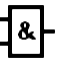
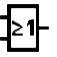
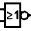

|
   |
AND/OR/NAND/NOR Gate |
| Library: | Gates | |||||||||||||||
| Introduced: | 2.0 Beta 1 | |||||||||||||||
| 外观符号: |
|

Behavior
AND、OR、NAND 和 NOT 门各自计算输入的相应函数，并在输出上发出结果。
默认情况下，任何未连接的输入都会被忽略——也就是说，如果输入确实没有任何连接，甚至没有电线。 这样，您可以插入一个 5 输入门，但只附加两个输入，它将作为 2 输入门工作； 这使您不必担心每次创建门时配置输入数量。
如果所有输入均未连接，则输出为错误值 (E) 。 不过，一些用户更喜欢 Logisim-evolution 坚持连接所有输入，因为这对应于现实世界的门。 您可以通过转到 | Project | > | Options… | menu item and selecting the | Simulation | tab, and selecting Error for undefined inputs
for Gate Output When Undefined
。
门的双输入真值表如下。 字母E代表错误值，字母U代表浮动值。
|
|
|||||||||||||||||||||||||||||||||||||||||
|
|
|||||||||||||||||||||||||||||||||||||||||
简而言之，只要所有输入都是 0 或 1，这些元件就会按预期工作。如果输入既不是 0 也不是 1，则它是浮动的 (U) 或者是 error (E) 值，则元件将其视为 0 和 1：如果输出与 AND 门具有相同的两种方式 第一个输入肯定为 0，第二个输入有问题，这将是输出值； 但如果输出根据 0 或 1 的不同而变化，则输出为错误值 (E)。
每个门的多位版本将对其输入按位执行其一位转换。
引脚（假设元件朝东）
- 西边：
-
元件的输入。 输入数量属性中指定的数量将相同。 位宽度根据数据位属性。
请注意，如果您使用异形门，“或”门和“或非”门的西侧将是弯曲的。 尽管如此，输入引脚还是排成一行。 Logisim-evolution 将绘制短存根来说明这一点； 如果你超过了一个存根，它会默默地认为你并不是故意超过它的。 在“打印机视图”中，除非将这些存根连接到电线，否则不会绘制这些存根。
- East edge :
- 门的输出，其值是根据如上所述的当前输入计算的。 位宽度根据数据位属性。
属性
当选择或添加元件时，数字 0 到 9 会改变其输入数量 属性，Alt-0 到 Alt-9 更改其数据位< /b> 属性，方向键更改其 方向 属性。
- 方向
- 元件的方向（其输出相对于其输入）。
- 数据位
- 元件输入和输出的位宽度。
- 数据位
-
确定是否绘制较宽或较窄版本的元件。 这不会影响输入数量，输入数量由“输入数量”属性指定。 但是，如果选择了形状门，则门将被绘制为带有
翼
，以容纳超出形状自然容纳范围的额外输入。 - 输入数量
- 确定元件在其西侧有多少个引脚。
- 输出值
-
指示如何将错误和正确的结果转换为输出值。 默认情况下，假由低电压 (0) 表示，真由高电压 (1) 表示，但其中之一可以用高阻抗（
浮动
）值代替。 这允许线或和线与连接，如下图所示： 在左侧，缓冲器的输出值属性为浮动/1，电阻器拉至 0，从而提供线或行为； 在右侧，缓冲器的输出值属性为 0/浮动，电阻器拉至 1，呈现有线与行为。
- 标签
- 与门关联的标签内的文本。
- 标签字体
- 用于呈现标签的字体。
- 否定x
-
如果
yes
，则输入在送入门之前被否定。 如果面向东或西，则输入从上到下计数；如果面向北或南，则从左到右计数。
Poke 工具行为
无
文本工具行为
允许编辑与门关联的标签。
返回 电路元件库参考手册